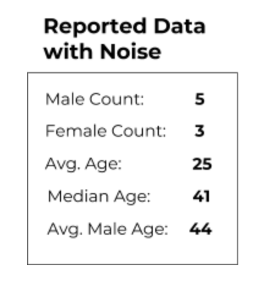
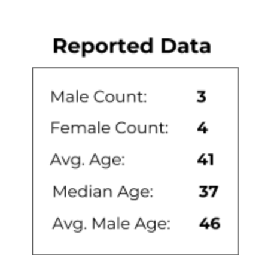
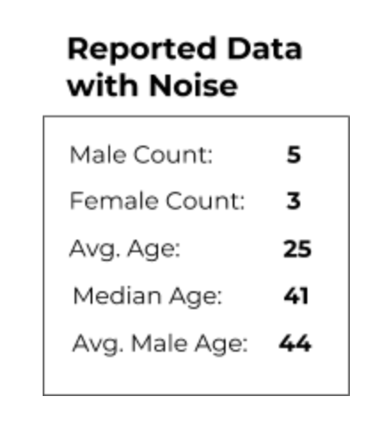

Another risk to privacy comes in the data analysis stage. After we collect the census data form around the country, we perform calculations to turn the raw data into reportable data.
These calculations are called queries. We count totals using count queries, like with sex, and average values like age with averaging queries.
Below are the reported data for an apartment building, without noise added. To discover the privacy risk, let’s work backwards from this reported data to see if we can learn things about the individual residents of this apartment.

With just these queries, it is hard to guess which people might live here. It could be 7 people who are all 41 years old, or perhaps several seniors and several young adults.
But what happens when we add more queries to the reported data?

With additional queries released in the reported data, it is possible to learn more about the raw data. Someone looking at the reported data knows the following:
- The average male age is higher than the average age
- There are only 3 men in the apartment
These make it likely that there are one or two senior men in this apartment. Releasing more queries from the same unprotected data makes it easier to identify individual people in that data.
Now, let’s look at reported data that has had noise added to it, and see if we can still identify people from the raw data.

Using the same process as before, we might guess the following about the apartment:
- The average male age is higher than the average age
- There are only 2 women in the apartment
However, these guesses are not necessarily true. Remember that the reported data here have an unknown amount of noise added to them.
If the data have a small amount of noise, we might guess that there are one or more young women in this apartment. But if the data have a high amount of noise, perhaps the female count is actually much higher and the average male age is much lower. This would completely change our guesses about the raw data.
Without knowledge of how much noise has been introduced to a residence, people are unable to make accurate guesses about the raw data, protecting the individuals in the residence.
Next Section